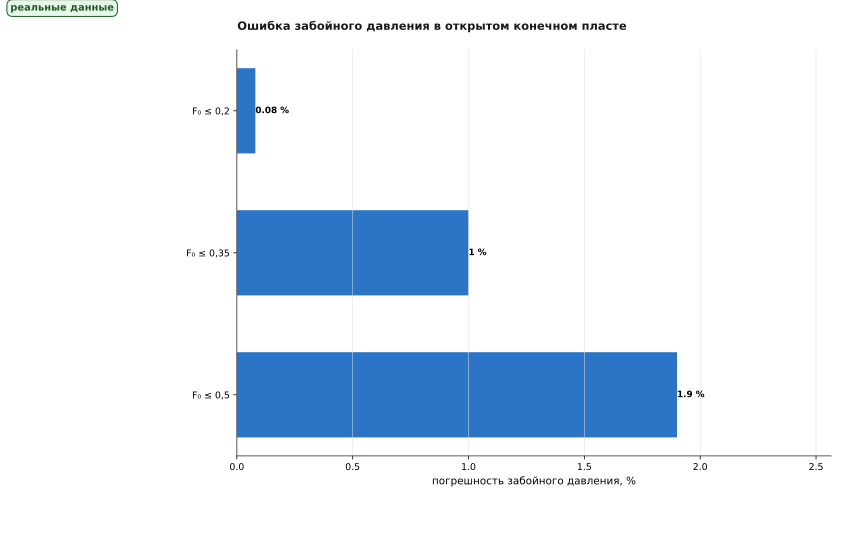

Путь › Когда точное решение применимо и как ввести движущуюся границу › Шаг 41 из 60
Проверить влияние внешней границы
В книге: «Плоскорадиальный фильтрационный поток упругой жидкости. Основная формула теории упругого режима фильтрации» стр. 493
Опирается на: шаг 36 «Основная формула упругого режима» (предпосылка), шаг 40 «Два масштаба безразмерного времени» (предпосылка)
Суть
Для конечного пласта формулу бесконечного пласта можно применять достаточно долго, пока внешний параметр Фурье F₀ мал.
Для забоя, для точки пласта и для сравнения открытого и закрытого пластов автор даёт разные условия.
Проверять нужно все условия пары сразу, а не одно из них.
Пороговая идея. Условия точности для забоя, других точек пласта и сравнения разных границ не взаимозаменяемы. модель
Как это работает
Точные решения для конечного пласта
Для ограниченных открытых пластов решения уравнения (23.40) — бесконечные ряды по функциям Бесселя. Для закрытых пластов решения тоже имеют вид таких рядов. Открытый пласт имеет внешний контур питания, закрытый — непроницаемую границу. стр. 493
«Решения дифференциального уравнения Фурье (23.40) для различных случаев фильтрации упругой жидкости в ограниченных открытых и закрытых пластах представляются бесконечными рядами по специальным функциям Бесселя.»
«Решения дифференциального уравнения Фурье (23.40) для различных случаев фильтрации упругой жидкости в ограниченных открытых и закрытых пластах представляются бесконечными рядами по специальным функциям Бесселя.»
Главный вывод
Изменение давления в открытом конечном пласте можно достаточно долго изучать простой формулой (23.52) для бесконечного пласта. Это вывод автора. стр. 493
«ние достаточно длительного времени изучать при помощи простой формулы (23.52) для бесконечного пласта.»
Давление на забое
Ошибка забойного давления в открытом конечном пласте зависит от внешнего параметра Фурье F₀ — безразмерного времени по радиусу пласта. Она не больше 0,08% при F₀ ≤ 0,2. При F₀ ≤ 0,35 — не больше 1%, при F₀ ≤ 0,5 — не больше 1,9%. стр. 493
«При этом погрешность в подсчетах забойного давления не превзойдет 0,08% при Fo ≤ 0,2; 1% при Fo ≤ 0,35; 1,9% при Fo ≤ 0,5.»
«При этом погрешность в подсчетах забойного давления не превзойдет 0,08% при Fo ≤ 0,2; 1% при Fo ≤ 0,35; 1,9% при Fo ≤ 0,5.»
«При этом погрешность в подсчетах забойного давления не превзойдет 0,08% при Fo ≤ 0,2; 1% при Fo ≤ 0,35; 1,9% при Fo ≤ 0,5.»

Давление в точке пласта
Для любой точки открытого кругового пласта точность до 0,2% достигается при трёх условиях сразу. Точка лежит не дальше r ≤ 0,1 Rк от скважины. Радиус пласта Rк ≥ 10⁵ rс. Параметр F₀ ≤ 0,2. стр. 493
«Для расчетов пластового давления в любой точке открытого кругового пласта в случае r ≤ 0,1 Rк, можно с высокой степенью точности (до 0,2%) пользоваться формулой (23.52) для бесконечного пласта, если при этом Rк ≥ 10⁵ rc, Fo ≤ 0,2.»
«Для расчетов пластового давления в любой точке открытого кругового пласта в случае r ≤ 0,1 Rк, можно с высокой степенью точности (до 0,2%) пользоваться формулой (23.52) для бесконечного пласта, если при этом Rк ≥ 10⁵ rc, Fo ≤ 0,2.»
«Для расчетов пластового давления в любой точке открытого кругового пласта в случае r ≤ 0,1 Rк, можно с высокой степенью точности (до 0,2%) пользоваться формулой (23.52) для бесконечного пласта, если при этом Rк ≥ 10⁵ rc, Fo ≤ 0,2.»
«Для расчетов пластового давления в любой точке открытого кругового пласта в случае r ≤ 0,1 Rк, можно с высокой степенью точности (до 0,2%) пользоваться формулой (23.52) для бесконечного пласта, если при этом Rк ≥ 10⁵ rc, Fo ≤ 0,2.»
Открытый, закрытый и бесконечный пласт
Забойные давления конечного (открытого и закрытого) и бесконечного пластов различаются не более чем на 1%. Первая пара условий: F₀ ≤ 0,33 и Rк ≥ 50 rс. Вторая пара: F₀ ≤ 0,35 и Rк ≥ 1000 rс. стр. 493
«В дополнение к указанным оценкам можно еще отметить, что различие в величинах забойных давлений в условиях конечного (открытого и закрытого) и бесконечного пластов не превзойдет 1%, если Fo ≤ 0,33, Rк ≥ 50 rc или если Fo ≤ 0,35, Rк ≥ 1000 rc.»
«В дополнение к указанным оценкам можно еще отметить, что различие в величинах забойных давлений в условиях конечного (открытого и закрытого) и бесконечного пластов не превзойдет 1%, если Fo ≤ 0,33, Rк ≥ 50 rc или если Fo ≤ 0,35, Rк ≥ 1000 rc.»
Как это делает специалист
Сначала решают, что нужно: давление на забое или в точке пласта. Затем проверяют F₀, положение точки и отношение Rк/rс. Одно выполненное условие не заменяет остальных. стр. 493
По шагам
Как проверить, можно ли считать пласт бесконечным
- Определите, что нужно: давление на забое или в точке пласта. стр. 493
- Вычислите внешний параметр Фурье F₀. стр. 493
- Для точки пласта проверьте r ≤ 0,1 Rк и Rк ≥ 10⁵ rс. стр. 493
- Сопоставьте результат с оценками погрешности автора. стр. 493
Цифры и условия
- Забой, открытый пласт: 0,08% при F₀ ≤ 0,2. стр. 493
- Забой, открытый пласт: 1% при F₀ ≤ 0,35. стр. 493
- Забой, открытый пласт: 1,9% при F₀ ≤ 0,5. стр. 493
- Точка пласта: до 0,2% при r ≤ 0,1 Rк, Rк ≥ 10⁵ rс и F₀ ≤ 0,2. стр. 493
- Не более 1% различия при F₀ ≤ 0,33 и Rк ≥ 50 rс. стр. 493
- Не более 1% различия при F₀ ≤ 0,35 и Rк ≥ 1000 rс. стр. 493
Что это значит для данных
Выбирают оценку в зависимости от того, считают ли давление на забое или в точке пласта. Проверяют безразмерное время по внешнему радиусу, положение точки и нужное отношение размеров.
- Вход
- Радиусы скважины и границы, положение точки, тип границы и безразмерное время по внешнему радиусу.
- Выход
- Допустимость расчёта по формуле бесконечного пласта при заданной погрешности.
- Где ломается
- Нельзя заменить проверку нескольких совместных условий проверкой только одного.
Где здесь ручной труд специалиста
- Входные данные
- Радиусы скважины и границы, положение точки, тип границы и безразмерное время по внешнему радиусу.
- Ручные шаги
- Выбрать строку условий, проверить единицы радиусов, вычислить безразмерное время и проверить все ограничения.
- Точки суждения
- Различить тип границы, место оценки давления и допустимую ошибку.
- Время
- Набор простых проверок позволяет не вычислять заново ряды, если приближение допустимо.
- Типичные ошибки
- Применить оценку забойной ошибки к любой точке или объединить условия из разных строк.
Аналогия модель
Как использовать упрощённую конфигурацию с заранее описанной областью применимости.
Где аналогия перестаёт работать: Граница пласта меняет физику задачи, а не просто значение настройки.
Новые понятия
- Открытый пласт
- Здесь пласт с внешним контуром питания. стр. 493 модель
- Закрытый пласт
- Здесь пласт с непроницаемой внешней границей. стр. 493 модель
- Забойное давление
- Давление у нижней части скважины, где она сообщается с пластом. стр. 493 модель
- Внешний параметр Фурье
- Безразмерное время на масштабе внешнего радиуса пласта. стр. 493 модель
- Функции Бесселя
- Специальные функции, по которым раскладывают решения для ограниченного пласта. стр. 493
Проверь себя
Верный ответ: 0,08%
Автор даёт 0,08% при F₀ ≤ 0,2. Где это в тексте (стр. 493) →
Верный ответ: r ≤ 0,1 Rк; Rк ≥ 10⁵ rс; F₀ ≤ 0,2
Нужны все три условия сразу; F₀ ≤ 0,5 относится к оценке для забоя. Где это в тексте (стр. 493) →
Верный ответ: F₀ ≤ 0,33 и Rк ≥ 50 rс; F₀ ≤ 0,35 и Rк ≥ 1000 rс
Автор приводит именно эти две пары условий. Где это в тексте (стр. 493) →
Источник
Все утверждения шага с дословной цитатой автора и страницей книги (по PDF).
Для открытого конечного пласта автор допускает достаточно длительное применение формулы бесконечного пласта. вывод
«ние достаточно длительного времени изучать при помощи простой формулы (23.52) для бесконечного пласта.»
Авторская оценка забойной погрешности в открытом конечном пласте: не выше 0,08% при внешнем параметре Фурье не больше 0,2. наблюдение
«При этом погрешность в подсчетах забойного давления не превзойдет 0,08% при Fo ≤ 0,2; 1% при Fo ≤ 0,35; 1,9% при Fo ≤ 0,5.»
Авторская оценка забойной погрешности в открытом конечном пласте: не выше 1% при внешнем параметре Фурье не больше 0,35. наблюдение
«При этом погрешность в подсчетах забойного давления не превзойдет 0,08% при Fo ≤ 0,2; 1% при Fo ≤ 0,35; 1,9% при Fo ≤ 0,5.»
Авторская оценка забойной погрешности в открытом конечном пласте: не выше 1,9% при внешнем параметре Фурье не больше 0,5. наблюдение
«При этом погрешность в подсчетах забойного давления не превзойдет 0,08% при Fo ≤ 0,2; 1% при Fo ≤ 0,35; 1,9% при Fo ≤ 0,5.»
Для открытого кругового пласта автор указывает точность до 0,2% у расчёта давления по формуле бесконечного пласта, если выполнены все три условия. наблюдение
«Для расчетов пластового давления в любой точке открытого кругового пласта в случае r ≤ 0,1 Rк, можно с высокой степенью точности (до 0,2%) пользоваться формулой (23.52) для бесконечного пласта, если при этом Rк ≥ 10⁵ rc, Fo ≤ 0,2.»
Для этой оценки точка находится не дальше 0,1 внешнего радиуса от скважины. наблюдение
«Для расчетов пластового давления в любой точке открытого кругового пласта в случае r ≤ 0,1 Rк, можно с высокой степенью точности (до 0,2%) пользоваться формулой (23.52) для бесконечного пласта, если при этом Rк ≥ 10⁵ rc, Fo ≤ 0,2.»
Для этой оценки внешний радиус составляет не менее 10⁵ радиусов скважины. наблюдение
«Для расчетов пластового давления в любой точке открытого кругового пласта в случае r ≤ 0,1 Rк, можно с высокой степенью точности (до 0,2%) пользоваться формулой (23.52) для бесконечного пласта, если при этом Rк ≥ 10⁵ rc, Fo ≤ 0,2.»
Для этой оценки внешний параметр Фурье не превышает 0,2. наблюдение
«Для расчетов пластового давления в любой точке открытого кругового пласта в случае r ≤ 0,1 Rк, можно с высокой степенью точности (до 0,2%) пользоваться формулой (23.52) для бесконечного пласта, если при этом Rк ≥ 10⁵ rc, Fo ≤ 0,2.»
Забойные давления конечного открытого или закрытого и бесконечного пластов отличаются не более чем на 1%, когда внешний параметр Фурье не выше 0,33, а внешний радиус не меньше 50 радиусов скважины. наблюдение
«В дополнение к указанным оценкам можно еще отметить, что различие в величинах забойных давлений в условиях конечного (открытого и закрытого) и бесконечного пластов не превзойдет 1%, если Fo ≤ 0,33, Rк ≥ 50 rc или если Fo ≤ 0,35, Rк ≥ 1000 rc.»
Другая пара условий для того же предела различия 1%: внешний параметр Фурье не выше 0,35 и внешний радиус не меньше 1000 радиусов скважины. наблюдение
«В дополнение к указанным оценкам можно еще отметить, что различие в величинах забойных давлений в условиях конечного (открытого и закрытого) и бесконечного пластов не превзойдет 1%, если Fo ≤ 0,33, Rк ≥ 50 rc или если Fo ≤ 0,35, Rк ≥ 1000 rc.»
Решения для ограниченных открытых пластов представляются бесконечными рядами по функциям Бесселя. наблюдение
«Решения дифференциального уравнения Фурье (23.40) для различных случаев фильтрации упругой жидкости в ограниченных открытых и закрытых пластах представляются бесконечными рядами по специальным функциям Бесселя.»
Решения для ограниченных закрытых пластов тоже представляются бесконечными рядами по функциям Бесселя. наблюдение
«Решения дифференциального уравнения Фурье (23.40) для различных случаев фильтрации упругой жидкости в ограниченных открытых и закрытых пластах представляются бесконечными рядами по специальным функциям Бесселя.»
На этот шаг опираются: шаг 42 «Насколько важен радиус скважины», шаг 44 «Зачем нужны приближённые методы».